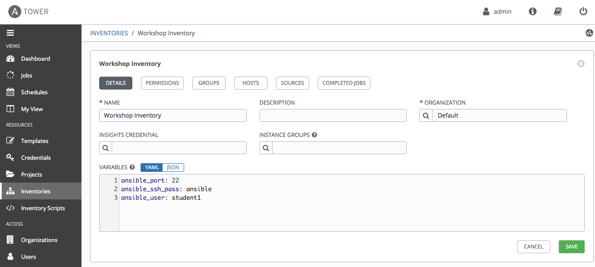
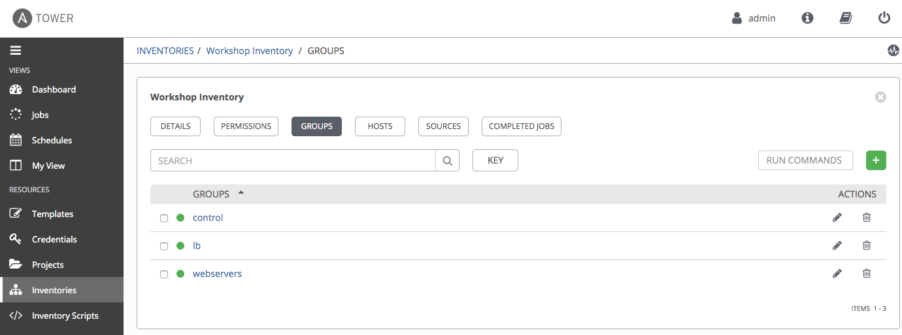
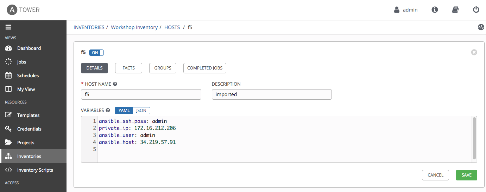
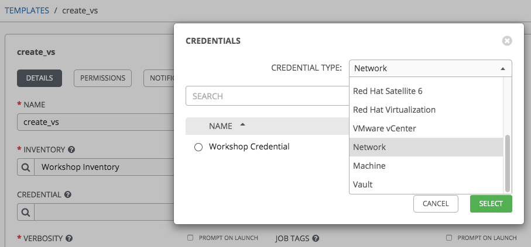
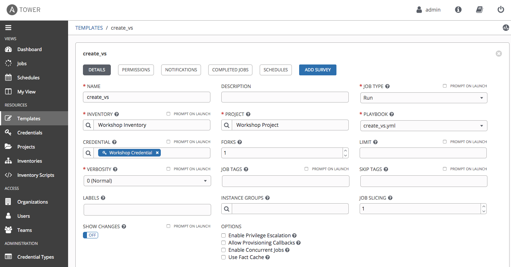
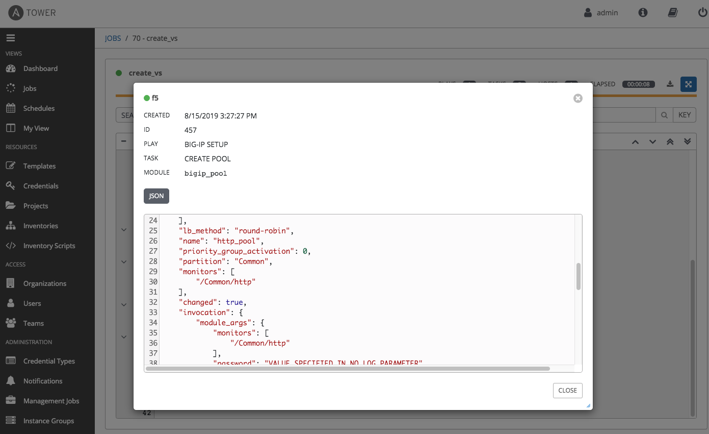
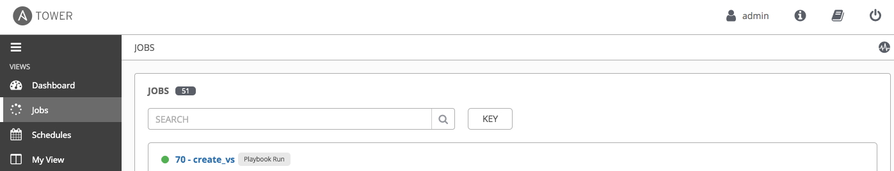
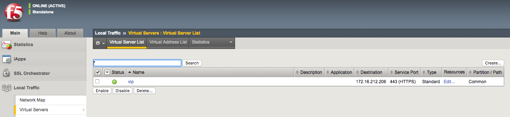
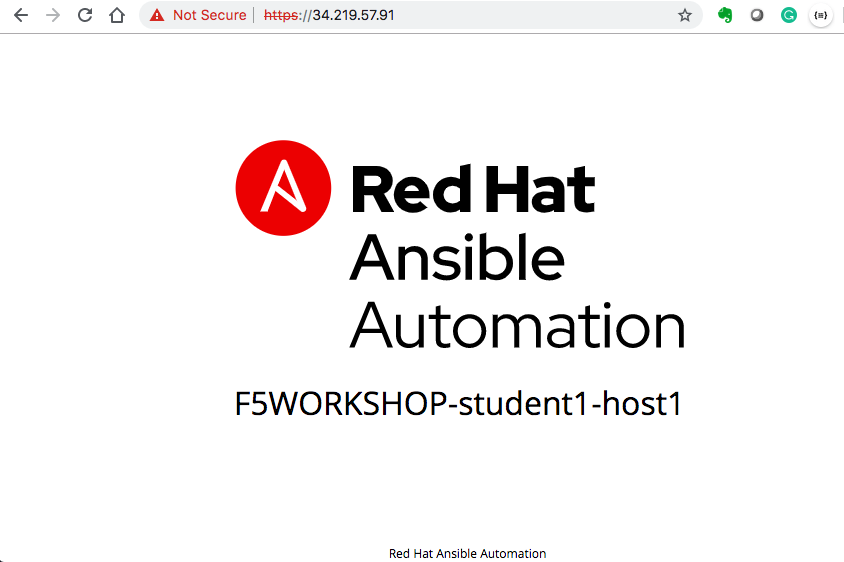
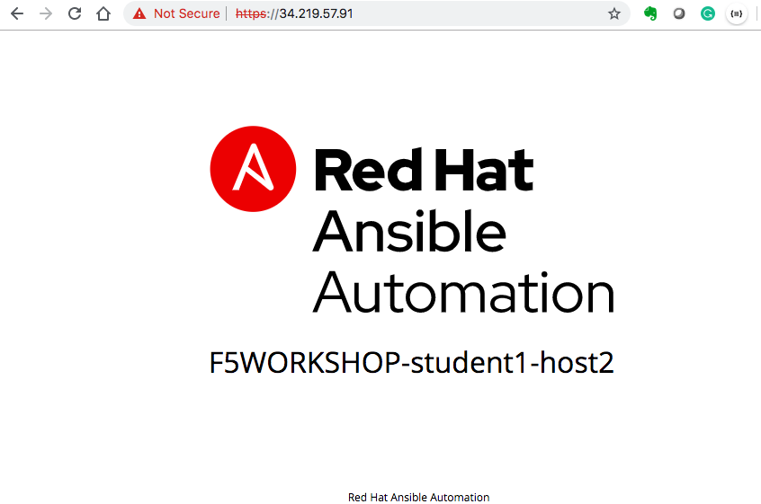

F5 Solutions for Containers > Class 9: Basic BIG-IP Configuration Management with Ansible > Section 4 - Ansible Tower F5 Exercises Source |
Exercise 4.1: Creating a Tower Job Template¶
Objective¶
Demonstrate a BIG-IP Virtual Server configuration job template for Red Hat Ansible Tower. This job template will create a virtual server, a pool, and add two web servers to the pool .
To run an Ansible Playbook in Ansible Tower, we need to create a Job Template. A Job Template requires: - A Credential to login to devices. - An Inventory to run the job against - A Project which contains Ansible Playbooks
Guide¶
Step 1: Create a Credential¶
In the Ansible web UI, navigate to the
Credentialssection using the left navigation bar.Click on the green
 button to create a new
Credential:
button to create a new
Credential: Workshop CredentialFill out the credential parameters as follows, and click
SaveParameter Value Name Workshop CredentialCredential type: NetworkUsername adminPassword ansible
Note: double check BIG-IP password provided by instructor defaults to ansible
workshop credential link
Step 2: Migrate an Inventory¶
Note: Here we just showcase one way to migrate an inventory file from the Ansible Tower control node (awx-manage)
In the Ansible web UI, navigate to the
Inventoriessection using the left navigation bar.Click on the green
button to create an empty
inventory Workshop Inventory.Login via SSH to your Ansible Tower control node (This is the Linux machine that has Ansible Tower installed on). The SSH credentials needed again here.
Locate the flat-file that represents your Ansible inventory. Run the awx-manage inventory_import command like this
cd ~/networking-workshop/lab_inventory/ sudo awx-manage inventory_import --source=hosts --inventory-name="Workshop Inventory"
Now when you login via the WebUI you will see all the hosts under the inventory
Workshop InventoryIn your newly imported inventory, click on the button labeled
GROUPS. Click on the Group
lb, and then click on the button labeledHOSTS, you will see the hostf5. The BIG-IP hostf5in the inventory will have variables assigned to it with the respective values. Our playbook will refer to these inventory variables later in the lab. - Click on
Workshop Inventoryon the top to return to inventorythen click on the button labeledGROUPS.Click on the Groupwebservers, and then click on the button labeledHosts. You will see two hosts:host1andhost2.Click onhost1, and you will see the variables assigned to it with the respective values.
Step 3: Create a Project¶
In the Ansible web UI, navigate to the
Projectssection using the left navigation bar.Click on the green
button to create a new projectFill out the project parameters as follows, and click
SaveParameter Value Name Workshop Project SCM Type Git SCM URL h ttps://github.com/f5devcentral/an sible-tower-workshop-examples.git Update Revision on Launch ✓
workshop_project link
All the playbooks are availabe at https://github.com/f5devcentral/ansible-tower-workshop-examples, and you may take a look at what’s behind each playbook.
For reference, here is one of the playbooks that was imported and will be executed later in this lab.
``create_vs.yml``
---
- name: BIG-IP SETUP
hosts: lb
connection: local
gather_facts: false
tasks:
- name: Setting up provider values
set_fact:
provider:
server: "{{private_ip}}"
server_port: "8443"
validate_certs: "False"
- name: CREATE NODES
bigip_node:
provider: "{{provider}}"
host: "{{hostvars[item].ansible_host}}"
name: "{{hostvars[item].inventory_hostname}}"
loop: "{{ groups['webservers'] }}"
- name: CREATE POOL
bigip_pool:
provider: "{{provider}}"
name: "http_pool"
lb_method: "round-robin"
monitors: "/Common/http"
monitor_type: "and_list"
- name: ADD POOL MEMBERS
bigip_pool_member:
provider: "{{provider}}"
state: "present"
name: "{{hostvars[item].inventory_hostname}}"
host: "{{hostvars[item].ansible_host}}"
port: "80"
pool: "http_pool"
loop: "{{ groups['webservers'] }}"
- name: ADD VIRTUAL SERVER
bigip_virtual_server:
provider: "{{provider}}"
name: "vip"
destination: "{{private_ip}}"
port: "443"
enabled_vlans: "all"
all_profiles: ['http','clientssl','oneconnect']
pool: "http_pool"
snat: "Automap"
- name: PRINT OUT WEB VIP FOR F5
debug:
msg: "The VIP (Virtual IP) is https://{{ansible_host}}"
Step 4: Create a Job Template¶
Open the web UI and click on the
Templateslink on the left menu.
templates link
Click on the green
button to create a new job
templateMake sure to select ``Job Template`` and not ``Workflow Template``
Fill out the job template parameters as follows:
Parameter Value Name create_vs Job Type Run Inventory Workshop Inventory Project Workshop Project Playbook create_vs.yml Credential Workshop Credential From the CREDENTIAL TYPE select
Network, then seletctWorkshop Credential: Here is a screenshot of the job template with parameters filled out:
create_vs job template
Scroll down and click the green
savebutton.
Step 5: Launch the Job Template¶
Navigate back to the
Templateswindow, where all Job Templates are listed.Launch the
create_vsJob Template by clicking the Rocket button.
rocket button
When the rocket button is clicked this will launch the job. The job will open in a new window called the Job Details View. More info about Tower Jobs can be found in the documentation.
Step 6: Examine the Job Details View¶
On the left side there is a DETAILS pane, on the right side there is the Standard Out pane.
job details view
Examine the Details pane
The Details pane will provide information such as the timestamp for when the job started and finished, the job type (Check or Run), the user that launched the job, which Project and Ansible Playbook were used and more.
If the Job has not finished yet, the Details Pane will have a cancel button
 that can be used to stop the Job.
that can be used to stop the Job.Examine the Standard Out pane
The Standard Out pane will display the output from the Ansible Playbook. Every task output will match exactly what would be seen on the command line.
Click on the Expand Output button
This will expand the Standard Out pane to take the entirety of the window.
Click on a task in the Standard Out pane to open up structured output from that particular task.
Click on any line where there is a changed or ok
task details window
Step 7: Examine the Jobs window¶
Any Job Template that has been run or is currently running will show up under the Views -> Jobs window.
Click the Jobs button the left menu.

jobs button
The Jobs link displays a list of jobs and their status–shown as completed successfully or failed, or as an active (running) job. Actions you can take from this screen include viewing the details and standard output of a particular job, relaunch jobs, or remove jobs.
Click on the ``create_vs`` Job
jobs link
The ``create_vs`` job was the most recent (unless you have been launching more jobs). Click on this job to return to the Job Details View. Ansible Tower will save the history of every job launched.
Step 8: Verify the BIG-IP Virtual Server was created¶
Login to the F5 BIG-IP with your web browser to see what was configured. Login information for the BIG-IP:
- username: admin
- password: provided by instructor defaults to ansible
The load balancer virtual server can be found by navigating the menu on the left. Click on Local Traffic. then click on Virtual Servers. See the screenshot below: 
Step 9: Verifying the web servers¶
Each of the two RHEL web servers actually already has apache running. Open up the public IP of the F5 load balancer in your web browser:
This time use port 443 instead of 8443, e.g. https://X.X.X.X:443/
Each time you refresh, BIG-IP will load balance the traffic between host1 and host2, as shown below:  
Takeaways¶
You have successfully demonstrated - Creating a Job Template to deploy a Virtual Server - Launching a Job Template from the Ansible Tower UI - Verifying the Virtual Server is correctly created - Veryfying the web server is up and running
Complete¶
You have completed lab exercise 4.1
Click here to return to the Ansible Network Automation Workshop